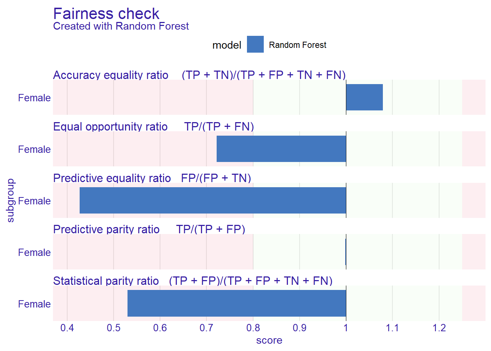
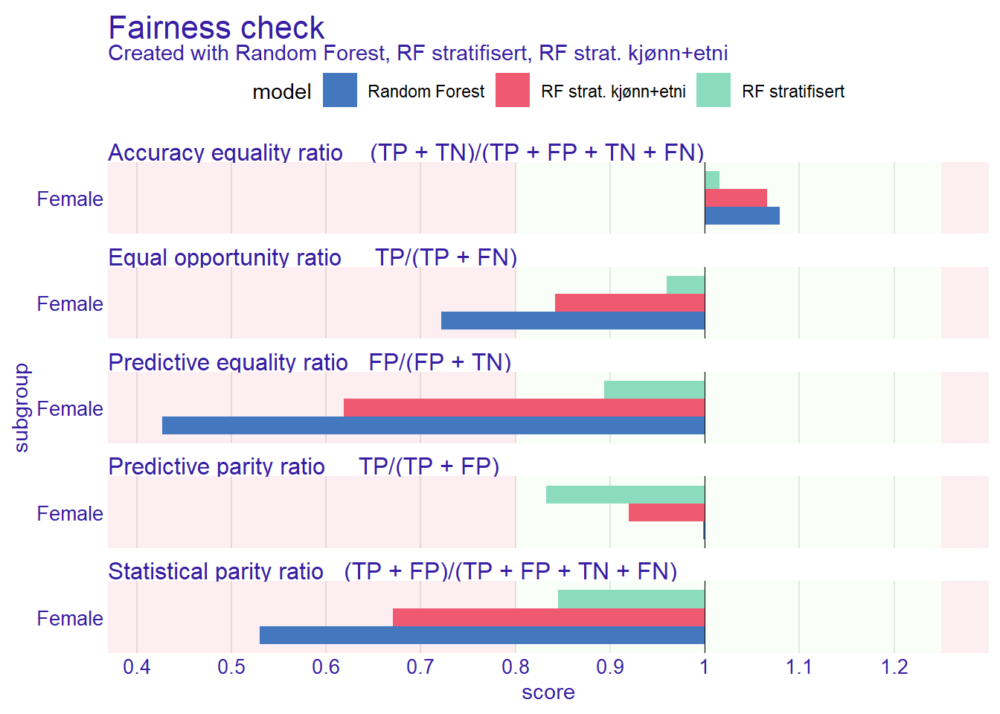
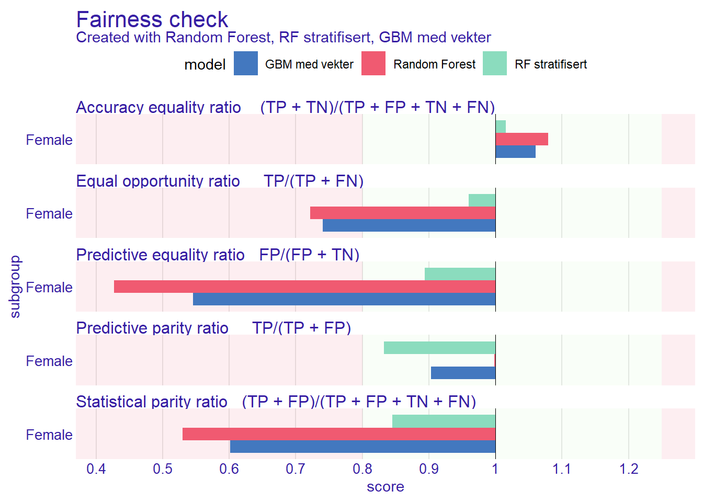

library(tidyverse) # datahåndtering og grafikk
library(randomForest) # random forest-modeller
library(gbm) # gradient boosting
library(caret) # confusionMatrix()
library(DALEX) # lage explainer-objekter for modeller
library(fairmodels) # fairness-sjekk og visualisering8 Fairness i maskinlæring
I dette kapittelet skal vi bruke følgende pakker:
Nå som vi har sett på klassifikasjonstrær, bagging, random forest og boosting er det på tide å gjøre noen rettferdighetsbetraktninger. I maskinlæring er fairness et sentralt tema: modeller kan systematisk behandle ulike grupper ulikt, noe som kan ha alvorlige konsekvenser avhengig av hva modellen brukes til.
8.1 Hva slags rettferdighet?
I denne settingen kan rettferdighet komme i betraktning på flere måter, herunder følgende:
- I hvilken grad maskiner vs mennesker tar avgjørelser, og herunder mulighet til å bli hørt og legge frem sin sak
- I hvilken grad dataene algoritmen er trent opp på inneholder skjevheter i utgangspunktet som så reproduseres i videre implementering
- I hvilken grad sluttresultatet har rimelig presisjon og akseptable feilrater, herunder vurdering av asymetriske feilrater
- I hvilken grad forrige punkt er avpasset mot hvilke tiltak man så setter i verk
- I hvilken grad feilrater og presisjon varierer systematisk med undergrupper i populasjonen
Det er nok av ting å ta tak i her, men vi skal her fokusere på det som kan tallfestes gitt den modellen man har. Men for all del: Er datakvaliteten dårlig er det begrenset hvor bra det kan bli uansett. Selv om kjente skjevheter i dataene i prinsippet kan motarbeides, er det vel i praksis slik at en skjevhet sjelden kommer alene.
8.2 COMPAS-datasettet
COMPAS er et risikoverktøy brukt av amerikansk politi i flere stater som benyttes på individnivå til å vurdere risikoen for at en person begår ny kriminalitet. Bruken av dette verktøyet har vært kontroversielt i flere år og kraftig kritisert. En viktig grunn er at prediksjonene slår forskjellig ut for ulike grupper og er slik sett “biased” mot bl.a. svarte borgere. Resultatet er at de blir mer utsatt for politiets oppmerksomhet enn andre.1 Et datasett er gjort tilgjengelig av Propublica her som vi skal bruke.
compas <- readRDS("data/compas.rds")
glimpse(compas)Rows: 6,172
Columns: 7
$ Two_yr_Recidivism <fct> 0, 1, 1, 0, 1, 0, 0, 0, 1, 0, 0, 1, 1, 0, 0, 1, 1…
$ Number_of_Priors <int> 0, 0, 4, 0, 14, 3, 0, 0, 3, 0, 0, 1, 7, 0, 3, 6, …
$ Age_Above_FourtyFive <fct> 1, 0, 0, 0, 0, 0, 0, 0, 0, 0, 0, 1, 0, 0, 0, 0, 0…
$ Age_Below_TwentyFive <fct> 0, 0, 1, 0, 0, 0, 0, 0, 1, 0, 0, 0, 0, 0, 0, 0, 0…
$ Misdemeanor <fct> 0, 0, 0, 1, 0, 0, 1, 0, 1, 1, 0, 0, 0, 1, 0, 0, 0…
$ Ethnicity <fct> Other, African_American, African_American, Other,…
$ Sex <fct> Male, Male, Male, Male, Male, Male, Female, Male,…8.3 Baseline-modell
Vi tilpasser en random forest-modell på datasettet:
set.seed(4356)
rf <- randomForest(Two_yr_Recidivism ~ .,
data = compas)Vi lagrer prediksjonen i en kopi av datasettet, slik at vi kan sammenligne prediksjon og observert utfall:
compas_p <- compas %>%
mutate(pred_rf = predict(rf))En overordnet confusion matrix viser modellens ytelse for alle observasjoner samlet:
confusionMatrix(compas_p$pred_rf,
compas_p$Two_yr_Recidivism, positive = "1")Confusion Matrix and Statistics
Reference
Prediction 0 1
0 2462 1132
1 901 1677
Accuracy : 0.6706
95% CI : (0.6587, 0.6823)
No Information Rate : 0.5449
P-Value [Acc > NIR] : < 2.2e-16
Kappa : 0.3313
Mcnemar's Test P-Value : 3.378e-07
Sensitivity : 0.5970
Specificity : 0.7321
Pos Pred Value : 0.6505
Neg Pred Value : 0.6850
Prevalence : 0.4551
Detection Rate : 0.2717
Detection Prevalence : 0.4177
Balanced Accuracy : 0.6645
'Positive' Class : 1
For å forstå bias kan vi dele opp confusion matrix etter kjønn. Her er modellens ytelse for menn:
compas_m <- compas_p %>% filter(Sex == "Male")
confusionMatrix(compas_m$pred_rf,
compas_m$Two_yr_Recidivism, positive = "1")Confusion Matrix and Statistics
Reference
Prediction 0 1
0 1807 897
1 794 1499
Accuracy : 0.6616
95% CI : (0.6483, 0.6747)
No Information Rate : 0.5205
P-Value [Acc > NIR] : < 2e-16
Kappa : 0.3209
Mcnemar's Test P-Value : 0.01312
Sensitivity : 0.6256
Specificity : 0.6947
Pos Pred Value : 0.6537
Neg Pred Value : 0.6683
Prevalence : 0.4795
Detection Rate : 0.3000
Detection Prevalence : 0.4589
Balanced Accuracy : 0.6602
'Positive' Class : 1
Og for kvinner:
compas_f <- compas_p %>% filter(Sex == "Female")
confusionMatrix(compas_f$pred_rf,
compas_f$Two_yr_Recidivism, positive = "1")Confusion Matrix and Statistics
Reference
Prediction 0 1
0 655 235
1 107 178
Accuracy : 0.7089
95% CI : (0.682, 0.7348)
No Information Rate : 0.6485
P-Value [Acc > NIR] : 6.251e-06
Kappa : 0.3128
Mcnemar's Test P-Value : 6.539e-12
Sensitivity : 0.4310
Specificity : 0.8596
Pos Pred Value : 0.6246
Neg Pred Value : 0.7360
Prevalence : 0.3515
Detection Rate : 0.1515
Detection Prevalence : 0.2426
Balanced Accuracy : 0.6453
'Positive' Class : 1
Modellen er mer presis for kvinner enn for menn — dette er et eksempel på bias i modellen. Forholdet mellom accuracy for menn og kvinner gir et enkelt mål på skjevheten. Men å sammenligne confusion matriser manuelt for mange grupper og mange mål er arbeidskrevende. Det er her fairness-verktøy kommer inn.
8.4 Mål på fairness med fairmodels
Pakken fairmodels gjør det enkelt å måle fairness på tvers av grupper for mange mål på én gang. For å bruke den trengs et explainer-objekt fra DALEX-pakken. Et explainer-objekt er en standardisert innpakning rundt en modell, slik at fairmodels kan bruke ulike typer modeller (random forest, boosting, etc.) med det samme grensesnittet.
Vi lager explainer-objektet for baseline random forest-modellen. Vi angir modellen, prediktordata (uten utfallsvariabelen), og den numeriske versjonen av utfallsvariabelen:
y_num <- as.numeric(as.character(compas$Two_yr_Recidivism))
compas_X <- compas %>% select(-Two_yr_Recidivism)
explainer_rf <- DALEX::explain(
model = rf,
data = compas_X,
y = y_num,
label = "Random Forest"
)Preparation of a new explainer is initiated
-> model label : Random Forest
-> data : 6172 rows 6 cols
-> target variable : 6172 values
-> predict function : yhat.randomForest will be used ( default )
-> predicted values : No value for predict function target column. ( default )
-> model_info : package randomForest , ver. 4.7.1.2 , task classification ( default )
-> predicted values : numerical, min = 0 , mean = 0.4037122 , max = 1
-> residual function : difference between y and yhat ( default )
-> residuals : numerical, min = -1 , mean = 0.05140765 , max = 1
A new explainer has been created! Deretter bruker vi fairness_check() med Sex som beskyttet variabel og "Male" som referansegruppe:
fcheck <- fairness_check(
explainer_rf,
protected = compas$Sex,
privileged = "Male"
)Creating fairness classification object
-> Privileged subgroup : character ([32m Ok [39m )
-> Protected variable : factor ([32m Ok [39m )
-> Cutoff values for explainers : 0.5 ( for all subgroups )
-> Fairness objects : 0 objects
-> Checking explainers : 1 in total ( [32m compatible [39m )
-> Metric calculation : 13/13 metrics calculated for all models
[32m Fairness object created succesfully [39m plot(fcheck)
Plottet viser parity loss for en rekke ulike fairness-mål. Den grønne sonen angir et akseptabelt område basert på 4/5-regelen: forholdet mellom gruppen og referansegruppen bør ligge mellom 0.8 og 1.25. Søyler utenfor den grønne sonen betyr at modellen er statistisk sett unfair på det aktuelle målet.
Tre mål er særlig sentrale:
| Mål i fairmodels | Hva måles | Konsept |
|---|---|---|
PPV |
Andelen sanne positive av alle predikerte positive | Predictive rate parity |
TPR |
Andelen sanne positive av alle faktisk positive (sensitivitet) | Equalized odds |
FPR |
Andelen falske positive av alle faktisk negative | False positive rate parity |
Hvilket mål som er viktigst avhenger av hva modellen skal brukes til og hva konsekvensene av feil er. Et eksempel: Hvis modellen brukes til å vurdere prøveløslatelse, vil en høy FPR for én gruppe bety at den gruppen urettmessig beholder i fengsel mer enn andre grupper.
Vi kan også sjekke fairness for etnisitet ved å bytte ut den beskyttede variabelen:
fcheck_etni <- fairness_check(
explainer_rf,
protected = compas$Ethnicity,
privileged = "Caucasian"
)Creating fairness classification object
-> Privileged subgroup : character ([32m Ok [39m )
-> Protected variable : factor ([32m Ok [39m )
-> Cutoff values for explainers : 0.5 ( for all subgroups )
-> Fairness objects : 0 objects
-> Checking explainers : 1 in total ( [32m compatible [39m )
-> Metric calculation : 11/13 metrics calculated for all models ( [33m2 NA created[39m )
[32m Fairness object created succesfully [39m plot(fcheck_etni)Warning in plot.fairness_object(fcheck_etni): Omiting NA for models: Random Forest
Information about passed metrics may be inaccurate due to NA present, it is advisable to check metric_scores plot.Warning: Removed 1 row containing missing values or values outside the scale range
(`geom_bar()`).
8.5 Forbedre fairness: Stratifisering
Vi har sett at sampsize i random forest styrer fordelingen av treningsdata per utfallskategori. For å motvirke bias mellom undergrupper kan vi bruke stratifisert sampling: ved å trekke fra grupper i styrte proporsjoner kan vi justere modellens feilrater per gruppe.
sampsize i random forest styrer ikke bare fordelingen av utfall, men kan kombineres med strata for å stratifisere etter en egendefinert variabel. Stratifiseringsvektoren kombinerer kjønn og utfall til fire kategorier:
strat <- compas %>%
mutate(strat = paste0(Sex, Two_yr_Recidivism)) %>%
pull(strat)
table(strat)strat
Female0 Female1 Male0 Male1
762 413 2601 2396 Tallene i sampsize oppgis i samme rekkefølge som tabellen: kvinner uten tilbakefall, kvinner med tilbakefall, menn uten tilbakefall, menn med tilbakefall. Her vektes kvinner med tilbakefall opp relativt, for å øke modellens sensitivitet for denne gruppen:
set.seed(45)
rf_strat <- randomForest(Two_yr_Recidivism ~ .,
data = compas,
strata = strat,
sampsize = c(215, 290, 1500, 1500),
ntree = 800)Vi lager en explainer for den stratifiserte modellen og sammenligner med baseline ved å sende begge explainere til fairness_check():
explainer_rf_strat <- DALEX::explain(
model = rf_strat,
data = compas_X,
y = y_num,
label = "RF stratifisert"
)Preparation of a new explainer is initiated
-> model label : RF stratifisert
-> data : 6172 rows 6 cols
-> target variable : 6172 values
-> predict function : yhat.randomForest will be used ( default )
-> predicted values : No value for predict function target column. ( default )
-> model_info : package randomForest , ver. 4.7.1.2 , task classification ( default )
-> predicted values : numerical, min = 0 , mean = 0.4916229 , max = 1
-> residual function : difference between y and yhat ( default )
-> residuals : numerical, min = -1 , mean = -0.03650296 , max = 1
A new explainer has been created! fcheck2 <- fairness_check(
explainer_rf,
explainer_rf_strat,
protected = compas$Sex,
privileged = "Male"
)Creating fairness classification object
-> Privileged subgroup : character ([32m Ok [39m )
-> Protected variable : factor ([32m Ok [39m )
-> Cutoff values for explainers : 0.5 ( for all subgroups )
-> Fairness objects : 0 objects
-> Checking explainers : 2 in total ( [32m compatible [39m )
-> Metric calculation : 13/13 metrics calculated for all models
[32m Fairness object created succesfully [39m plot(fcheck2)
Dette er en av de store fordelene med fairmodels: vi kan sammenligne flere modeller direkte i ett plot. Ble den stratifiserte modellen mer rettferdig enn baseline-modellen?
Merk at det ikke er noe åpenbart svar på hvilke verdier man skal velge for sampsize. Utgangspunktet er å sørge for at det trekkes omtrent like mange observasjoner fra grupper man ønsker å balansere. Det krever litt utprøving.
8.5.1 Hva med andre subgrupper?
Vi justerte for kjønn — men slo det positivt ut for etnisitet også?
fcheck2_etni <- fairness_check(
explainer_rf,
explainer_rf_strat,
protected = compas$Ethnicity,
privileged = "Caucasian"
)Creating fairness classification object
-> Privileged subgroup : character ([32m Ok [39m )
-> Protected variable : factor ([32m Ok [39m )
-> Cutoff values for explainers : 0.5 ( for all subgroups )
-> Fairness objects : 0 objects
-> Checking explainers : 2 in total ( [32m compatible [39m )
-> Metric calculation : 8/13 metrics calculated for all models ( [33m5 NA created[39m )
[32m Fairness object created succesfully [39m plot(fcheck2_etni)Warning in plot.fairness_object(fcheck2_etni): Omiting NA for models: Random Forest
Information about passed metrics may be inaccurate due to NA present, it is advisable to check metric_scores plot.Warning: Removed 1 row containing missing values or values outside the scale range
(`geom_bar()`).
Sannsynligvis ikke. Vi justerte for kjønn, ikke for etnisitet. En mulighet er å stratifisere på begge variable samtidig. Vi starter med å lage en kombinert stratifiseringsvektor:
strat2 <- compas %>%
mutate(caucasian = ifelse(Ethnicity == "Caucasian", "Caucasian", "Other"),
strat = paste0(Sex, caucasian, Two_yr_Recidivism)) %>%
pull(strat)
table(strat2)strat2
FemaleCaucasian0 FemaleCaucasian1 FemaleOther0 FemaleOther1
312 170 450 243
MaleCaucasian0 MaleCaucasian1 MaleOther0 MaleOther1
969 652 1632 1744 Problemet her er at noen grupper er svært små. Å stratifisere på disse gir bare støy. Vi begrenser oss til å skille mellom “Caucasian” og “Other” fremfor alle etnisitetskategorier:
set.seed(45)
rf_strat2 <- randomForest(Two_yr_Recidivism ~ .,
data = compas,
strata = strat2,
sampsize = c(120, 120,
200, 200,
400, 400,
900, 900),
ntree = 800)explainer_rf_strat2 <- DALEX::explain(
model = rf_strat2,
data = compas_X,
y = y_num,
label = "RF strat. kjønn+etni"
)Preparation of a new explainer is initiated
-> model label : RF strat. kjønn+etni
-> data : 6172 rows 6 cols
-> target variable : 6172 values
-> predict function : yhat.randomForest will be used ( default )
-> predicted values : No value for predict function target column. ( default )
-> model_info : package randomForest , ver. 4.7.1.2 , task classification ( default )
-> predicted values : numerical, min = 0 , mean = 0.4721089 , max = 1
-> residual function : difference between y and yhat ( default )
-> residuals : numerical, min = -0.99875 , mean = -0.01698902 , max = 1
A new explainer has been created! fcheck3 <- fairness_check(
explainer_rf,
explainer_rf_strat,
explainer_rf_strat2,
protected = compas$Sex,
privileged = "Male"
)Creating fairness classification object
-> Privileged subgroup : character ([32m Ok [39m )
-> Protected variable : factor ([32m Ok [39m )
-> Cutoff values for explainers : 0.5 ( for all subgroups )
-> Fairness objects : 0 objects
-> Checking explainers : 3 in total ( [32m compatible [39m )
-> Metric calculation : 13/13 metrics calculated for all models
[32m Fairness object created succesfully [39m plot(fcheck3)
Sammenlign de tre modellene. Man kan justere for noe, men ikke alt samtidig. Med mer data kan man justere for mer, men man er alltid begrenset av datamaterialet.
8.6 Justere rettferdighet med vekting
En annen strategi er å vekte observasjoner i treningsfasen. Dette fungerer godt i boosting, der vektene direkte påvirker hva algoritmen fokuserer på. Vektingen er en måte å fortelle modellen at noen typer feil er viktigere enn andre.
gbm krever at utfallsvariabelen er numerisk (0/1) med distribution = "bernoulli". Vi lager en kopi av datasettet med konvertert utfall:
compas_gbm <- compas %>%
mutate(Two_yr_Recidivism = as.numeric(as.character(Two_yr_Recidivism)))Deretter lager vi en vektvektor der kvinner og observasjoner med tilbakefall vektes opp. Tanken er at modellen skal ta disse tilfellene mer alvorlig under trening:
wts <- compas_gbm %>%
mutate(wts = case_when(
Sex == "Male" & Two_yr_Recidivism == 0 ~ 1,
Sex == "Male" & Two_yr_Recidivism == 1 ~ 2,
Sex == "Female" & Two_yr_Recidivism == 0 ~ 2,
Sex == "Female" & Two_yr_Recidivism == 1 ~ 4)) %>%
pull(wts)case_when() setter én vektverdi per observasjon basert på kombinasjonen av kjønn og utfall, og pull() trekker ut vektene som en vektor. Kvinner med tilbakefall vektes fire ganger så mye som menn uten tilbakefall.
set.seed(542)
gradboost <- gbm(formula = Two_yr_Recidivism ~ .,
data = compas_gbm,
weights = wts,
distribution = "bernoulli",
n.trees = 4000,
interaction.depth = 3,
n.minobsinnode = 1,
shrinkage = 0.001,
bag.fraction = 0.5)For å bruke gbm med DALEX::explain() må vi angi en tilpasset prediksjonsfunksjon, fordi gbm trenger n.trees eksplisitt:
predict_gbm <- function(model, newdata) {
predict(model, newdata = newdata,
n.trees = model$n.trees, type = "response")
}
compas_gbm_X <- compas_gbm %>% select(-Two_yr_Recidivism)
explainer_gbm <- DALEX::explain(
model = gradboost,
data = compas_gbm_X,
y = compas_gbm$Two_yr_Recidivism,
predict_function = predict_gbm,
label = "GBM med vekter"
)Preparation of a new explainer is initiated
-> model label : GBM med vekter
-> data : 6172 rows 6 cols
-> target variable : 6172 values
-> predict function : predict_gbm
-> predicted values : No value for predict function target column. ( default )
-> model_info : package gbm , ver. 2.2.2 , task classification ( default )
-> predicted values : numerical, min = 0.2275137 , mean = 0.599534 , max = 0.8853893
-> residual function : difference between y and yhat ( default )
-> residuals : numerical, min = -0.8737405 , mean = -0.1444141 , max = 0.7417262
A new explainer has been created! Nå kan vi sammenligne alle tre modellene i ett fairness-kall:
fcheck_all <- fairness_check(
explainer_rf,
explainer_rf_strat,
explainer_gbm,
protected = compas$Sex,
privileged = "Male"
)Creating fairness classification object
-> Privileged subgroup : character ([32m Ok [39m )
-> Protected variable : factor ([32m Ok [39m )
-> Cutoff values for explainers : 0.5 ( for all subgroups )
-> Fairness objects : 0 objects
-> Checking explainers : 3 in total ( [32m compatible [39m )
-> Metric calculation : 13/13 metrics calculated for all models
[32m Fairness object created succesfully [39m plot(fcheck_all)
For en kompakt oversikt over alle modeller og alle mål kan vi bruke fairness_heatmap():
fairness_heatmap(fcheck_all)heatmap data top rows:
parity_loss_metric model score
1 TPR Random Forest 0.33
2 TPR RF stratifisert 0.04
3 TPR GBM med vekter 0.30
4 TNR Random Forest 0.21
5 TNR RF stratifisert 0.05
matrix model not scaled :
TPR TNR PPV NPV FNR
Random Forest 0.32585661 0.21473973 0.001931638 0.09351694 0.41239929
RF stratifisert 0.04097714 0.05222386 0.183665525 0.12662643 0.08413193
GBM med vekter 0.29995238 0.48139816 0.101917421 0.02585717 0.90244226
FPR FDR FOR TS STP ACC
Random Forest 0.8504339 0.003894726 0.23922716 0.2571368 0.6344638 0.07622932
RF stratifisert 0.1125916 0.275123636 0.37186916 0.1704876 0.1678504 0.01579906
GBM med vekter 0.6048768 0.123561862 0.08350239 0.2719322 0.5085737 0.05840212
F1 NEW_METRIC
Random Forest 0.1796063 0.7382559
RF stratifisert 0.1165885 0.1251091
GBM med vekter 0.1866799 1.2023946Sammenlign modellene. Ble den vektede boosting-modellen mer rettferdig enn random forest? Husk at det alltid er en trade-off: økt rettferdighet for én gruppe eller på ett mål kan gå på bekostning av total presisjon eller rettferdighet på et annet mål.
8.7 Avsluttende betraktninger
Hvilket fairness-mål som er viktigst er det ikke noe klart svar på. Det kommer an på hva man har tenkt å bruke prediksjonen til, hvilke konsekvenser tiltaket har, og hvilke konsekvenser det har å ikke gjøre noe. Disse konsekvensene kan vurderes forskjellig for ulike personer, grupper og situasjoner.
Problemet er at det ikke går an å justere i det uendelige for alle variable. I tillegg kan det uansett være andre egenskaper man ikke har data for som vil vise seg å gi urettferdige utslag. Man kan justere for noe, men ikke alt. Med nok data kan man justere for mer — men fremdeles ikke alt. I tillegg er justeringer som regel ikke gratis: økt rettferdighet for én gruppe kan innebære lavere presisjon totalt sett, eller redusert rettferdighet for en annen gruppe.
Så da er vi tilbake til det litt ubehagelige gjennomgangstemaet om prioriteringer og valg: Vil du ha en rettferdig modell eller en presis modell? Hvilke grupper bør den være rettferdig for — og hvilke grupper er det ikke så farlig om den er urettferdig for? Dette kan lett bli umulige valg.
Bør det nevnes at noen ganger ville man gjort noe uansett — altså gjort de samme tiltakene basert på skjønn eller andre typer vurderinger. Det vil også ha feilrater og forskjeller mellom undergrupper, selv om man ikke har et oppsett som gir testing-data å estimere dette på. Det betyr at du ikke bare må ta stilling til om algoritmen er “fair” eller ikke, men også om den er mer eller mindre “fair” enn den alternative fremgangsmåten.
Det er verd å minne på at politi i USA i stor grad er mer hardhendte enn norsk politi. Konsekvensene er altså litt mer alvorlig enn at unødig mange føler seg unødig mistenkte.↩︎